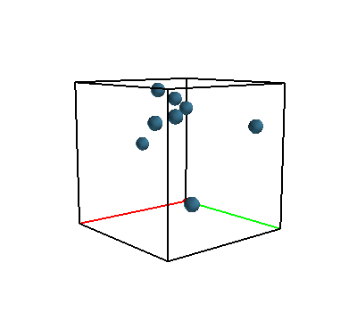

Önce basit bir simülasyon kodlayalım. Bazı toplar var, onları başta bir kuvvetle rasgele yönlere iteceğiz ve ne yapacaklarına bakacağız. Fiziksel parametreler şöyle, yerçekimi sabiti $g = 0.8$ (dünyadan daha az), topların birbirine ya da duvara çarpması sonucu hiç enerji kaybı olmuyor.
Bu tür bir sistemin konumu, o anki hali her parçacık için bazı değişkenlerin takip edilmesiyle olacak, bu değişkenler pozisyon, hız, kuvvet. Kütle her parçacık için aynı olacak.
Parçacık hareketi o parçacık üzerinde uygulanan kuvvet ile belirlenir, Newton denklemi $m \bar{a} = \bar{f}$, ki ivme ve kuvvet çok boyutlu dikkat edelim, o sebeple vektör notasyonu olarak üstte çizgi kullandık. Peki ivmeden, hiza ve yer değişikliğine nasıl gideriz? Newton formülünü bir ODE olarak tekrar düzenlersek onu ileri doğru entegre edebiliriz. Yer $\bar{x}$, hız $\bar{v}$ olmak üzere [5,6] ve her $i$ parçacığı için,
$$ \dot{\bar{v}}_i = \bar{f}_i / m_i $$
$$ \dot{\bar{x}}_i = \bar{v}_i $$
Bu tür bir sistemi entegre etmek için Euler'in metotu kullanılabilir [5, sf 5], her $n$ anında bir sonraki $n+1$ değeri için
$$ \bar{x}^{n+1} = \bar{x}^n + h \bar{v}^n $$
$$ \bar{v}^{n+1} = \bar{v}^n + h \bar{a}^n $$
ki $h$ ufak zaman aralığı olarak alınır, bir diğer isim $\Delta t$ olabilir,
alttaki kodda dt . O zaman her zaman diliminde her parçacığa etki eden
kuvvetler toplanır, bir nihai kuvvet vektörü elde edilir. Ardından üstteki
formüllerle sistem her parçacık için entegre edilir ve bir sonraki sistem durumu
elde edilir.
Bu ilk sistemde bazı basitleştirmeler var; kuvvet uygulanma ve onun hıza dönüşmesine her koşulda bakmıyoruz, duvarlar ve parçacıklar arası etkileri direk hız üzerinde uyguluyoruz. Topların birbirine çarpma sonucu hız vektörlerinin hesabı [4]'te.
Kodlama notu, çarpışma hesabı için her parçacığın diğer parçacığa yakınlık kontrolü pahalı olabilirdi, bunun için böleç tekniği kullanıldı [3]. Genel grafik yöntemi şurada [1] işlendi.
from OpenGL.GL import *
from OpenGL.GLU import *
from OpenGL.GLUT import *
from random import random
from PIL import Image
from PIL import ImageOps
from collections import defaultdict
import numpy as np, datetime
import sys, numpy.linalg as lin
p1,p2,p3 = 73856093, 19349663, 83492791
G = np.array([0.0, 0.0, -0.8])
m = 0.1
B = 10 # top
l = 0.2 # bolec kutu buyuklugu
n = B*20 # bolec sozluk buyuklugu
img = True
def spatial_hash(x):
"""
x = [x0,x1,x2] uc boyutlu kordinatlari icin bir bolec (hash) degeri uret
"""
ix,iy,iz = np.floor((x[0]+2.0)/l), np.floor((x[1]+2.0)/l), np.floor((x[2]+2.0)/l)
return (int(ix*p1) ^ int(iy*p2) ^ int(iz*p3)) % n
class Simulation:
def __init__(self):
self.geo_hash_list = None
self.i = 0
self.r = 0.1
self.g = 9.8
self.dt = 0.01
#self.cor = 0.6
self.cor = 1.0
self.balls = []
self.tm = 0.0
self.th = 0.0
self.mmax = 1.0-self.r
self.mmin = -1.0+self.r
self.right = False
self.left = False
def init(self):
for b in range(B):
v = np.array([0.0, 0.0, 0.0])
p = np.array([np.random.rand(), np.random.rand(), np.random.rand()])
f = 5*np.array([np.random.rand(), np.random.rand(), np.random.rand()])
self.balls.append({'pos':p, 'f':f, 'v': v, 'i': b})
tm = 0.0
glEnable(GL_LIGHTING)
glEnable(GL_LIGHT0)
glEnable(GL_DEPTH_TEST)
glClearColor(1.0,1.0,1.0,1.0)
glMatrixMode(GL_PROJECTION)
glLoadIdentity()
gluPerspective(60.0,1.0,1.0,50.0)
glTranslatef(0.0,0.0,-3.5)
glMatrixMode(GL_MODELVIEW)
glLoadIdentity()
def computeForces(self):
if (self.i==1):
for j,b in enumerate(self.balls):
b['f'] = b['f'] + (G * m)
else:
for b in self.balls:
b['f'] = G * m
def integrate(self):
self.geo_hash_list = defaultdict(list)
for j,b in enumerate(self.balls):
b['v'] += self.dt*(b['f']/m)
b['pos'] += self.dt*b['v']
if (abs(b['pos'][0]) >= self.mmax):
#print (b['i'], 'wall 1')
b['v'][0] *= -self.cor
if b['pos'][0] < 0:
b['pos'][0] = self.mmin
if (abs(b['pos'][1]) >= self.mmax):
#print (b['i'], 'wall 2')
b['v'][1] *= -self.cor
if b['pos'][1] < 0:
b['pos'][1] = self.mmin
if (abs(b['pos'][2]) >= self.mmax):
#print (b['i'], 'wall 3')
b['v'][2] *= -self.cor
if b['pos'][2] < 0:
b['pos'][2] = self.mmin
for j,b in enumerate(self.balls):
self.geo_hash_list[spatial_hash(self.balls[j]['pos'])].append(self.balls[j])
vDone = {}
for j,b in enumerate(self.balls):
if (len(self.geo_hash_list[spatial_hash(self.balls[j]['pos'])])>1):
otherList = self.geo_hash_list[spatial_hash(self.balls[j]['pos'])]
for other in otherList:
if (other['i'] != b['i'] and b['i'] not in vDone and other['i'] not in vDone):
dist = lin.norm(other['pos']-b['pos'])
if (dist < (2*self.r)):
#print ('collision')
vrel = b['v']-other['v']
n = (other['pos']-b['pos']) / dist
vnorm = np.dot(vrel,n)*n
#print (vnorm)
b['v'] = b['v'] - vnorm
other['v'] = other['v'] + vnorm
vDone[b['i']] = 1
vDone[other['i']] = 1
def update(self):
self.computeForces()
self.integrate()
self.th += 0.2
if self.th>360.0:
self.th -= 360.0
if self.i > 800: exit()
glutPostRedisplay()
def display(self):
glClear( GL_COLOR_BUFFER_BIT | GL_DEPTH_BUFFER_BIT)
glPushMatrix()
glRotatef(self.th,0.0,1.0,0.0)
glRotatef(90.0,-1.0,0.0,0.0)
glutWireCube(2.0)
for j,b in enumerate(self.balls):
glPushMatrix()
glTranslatef(b['pos'][0],b['pos'][1],b['pos'][2])
glMaterialfv(GL_FRONT, GL_DIFFUSE, [0.0, 0.0, 1.0, 1.0])
glutSolidSphere(self.r,50,50)
glPopMatrix()
glPopMatrix()
glutSwapBuffers()
# her 40'inci resmi diske png olarak yaz
if img and self.i % 10 == 0:
width,height = 480,480
data = glReadPixels(0, 0, width, height, GL_RGBA, GL_UNSIGNED_BYTE)
image = Image.frombytes("RGBA", (width, height), data)
image = ImageOps.flip(image)
image.save('/tmp/glutout-%03d.png' % self.i, 'PNG')
self.i += 1
if __name__ == '__main__':
s = Simulation()
glutInit(())
glutInitDisplayMode(GLUT_DOUBLE | GLUT_RGB | GLUT_DEPTH)
glutInitWindowSize(500,500)
glutCreateWindow("GLUT Bouncing Ball in Python")
glutDisplayFunc(s.display)
glutIdleFunc(s.update)
s.init()
glutMainLoop()

Tüm resimleri birleştirirsek,
convert -scale 30% /tmp/glutout-*.png /tmp/balls1.gif
Sonuç [2]'de görülebilir.
Kaynaklar
[1] Bayramlı, OpenGL, PyOpenGL, https://burakbayramli.github.io/dersblog/sk/2020/08/pyopengl.html
[2] Bayramlı, Simulasyon 1 Animasyon, https://github.com/burakbayramli/classnotes/blob/master/phy/phy_007_sim/balls1.gif?raw=true
[3] Bayramlı, Bilgisayar Bilim, En Yakın k-Komşu (k-Nearest Neighbor), Geometrik Yakınlık Hesabı
[4] Bayramlı, Fizik, Temel Fizik 2, Dönüşler, Basınç, Çarpışma
[5] Müller, Fluid Simulation SIGGRAPH 2007 Course Notes,
[6] Visual Interactive Simulation (Spring 15), https://www8.cs.umu.se/kurser/5DV058/VT15/
{kind=link}